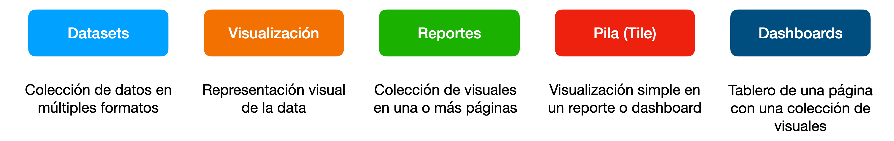
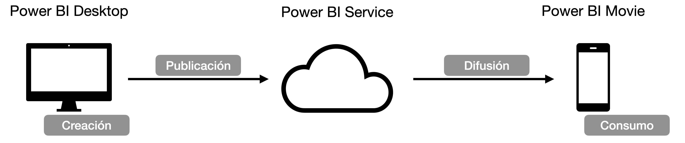
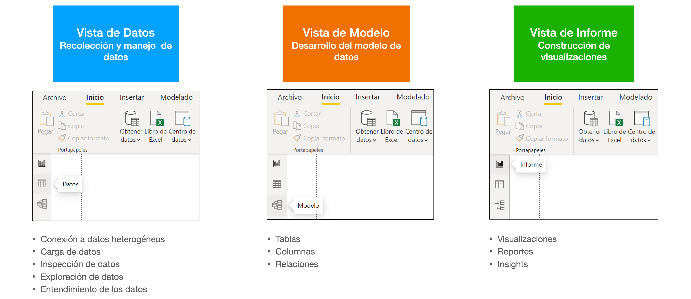

Introducción a Power BI
Última modificación: 27 de septiembre de 2022
Existe organizacionalmente la necesidad de:
Explicar el valor de negocio de una decisión (mostrar los datos detras de la decisión).
Explicar la autenticidad de la data.
Explicar la validez (precisión, confianza, …) de los cálculos detrás de las decisiones.
Sistematizar los análisis, compartir y publicar los resultados a través de diferentes plataformas.
Capacidades
Conección y consumo de datos provenientes de múltiples fuentes.
Uso de componentes comunes (y generales a muchas herramientas) para visualización y análisis de datos.
Creación simple de dashboards y reportes.
Bloques componentes

Componentes

Beneficios
Multiples plataformas de distribución
Data storytelling
Rapidez y eficiencia para la creación de visuales y uso de templates
Integración con un ecosistema de herramientas (Sharepoint, Excel, Power BI App, …)
Vistas de datos, modelo e informe
